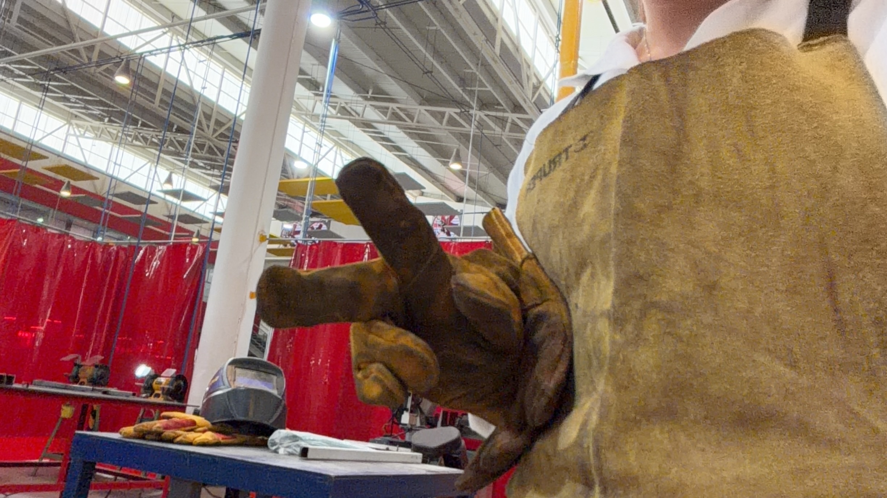
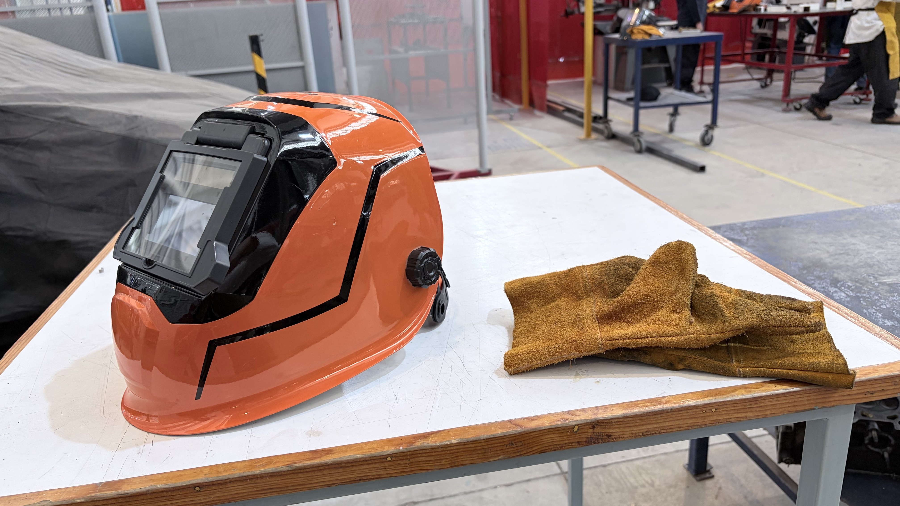
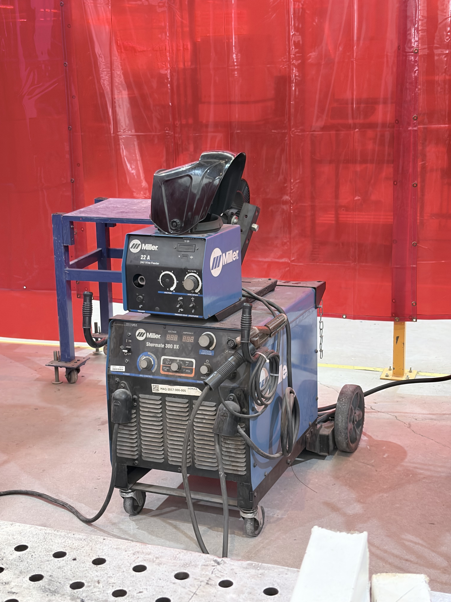
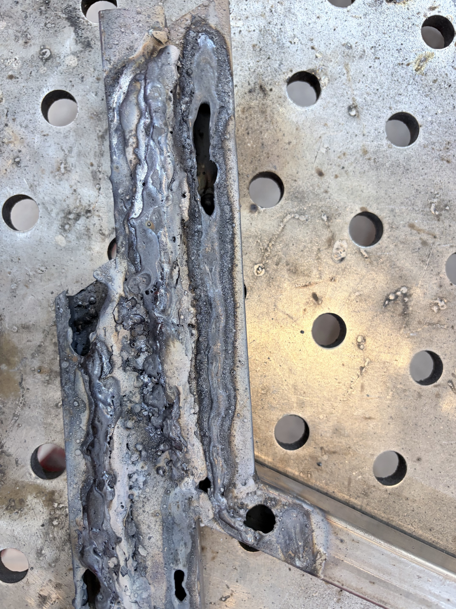
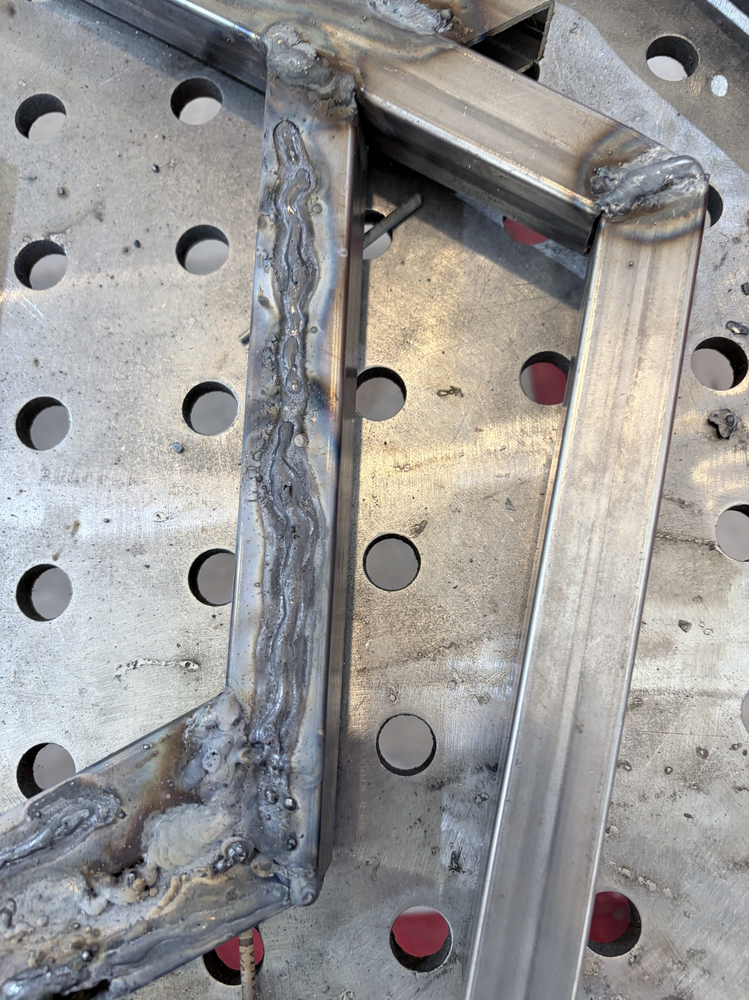
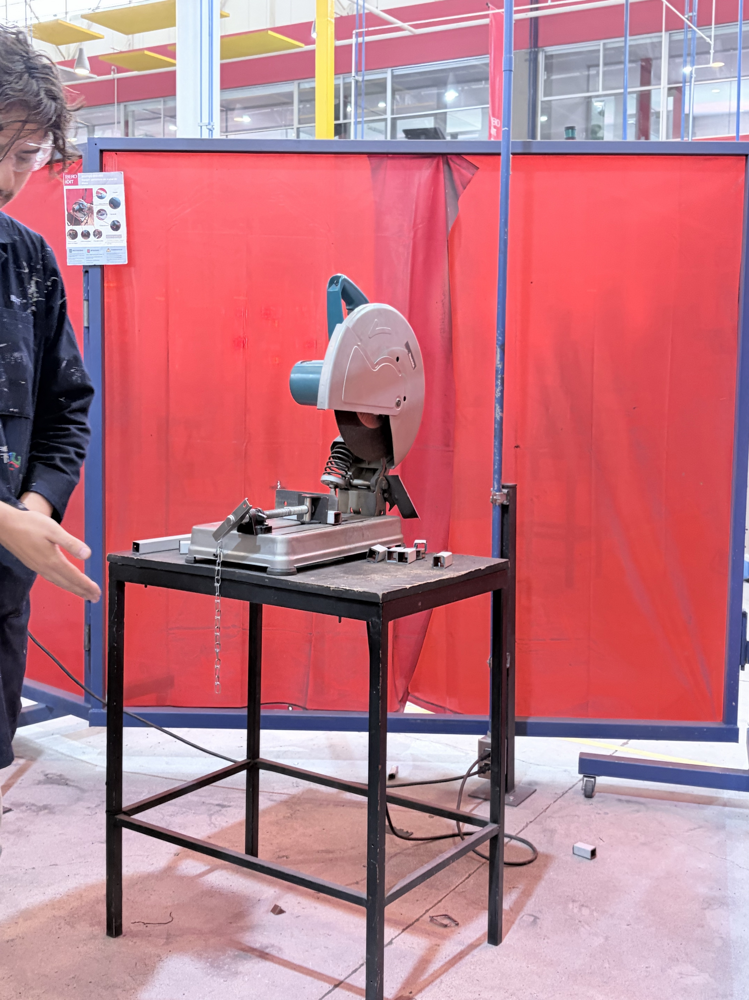
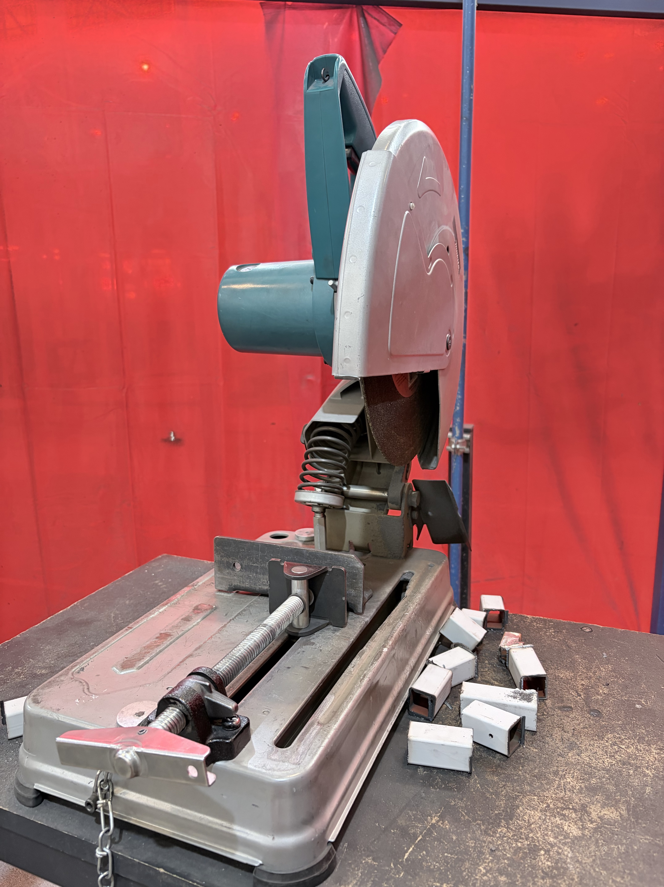
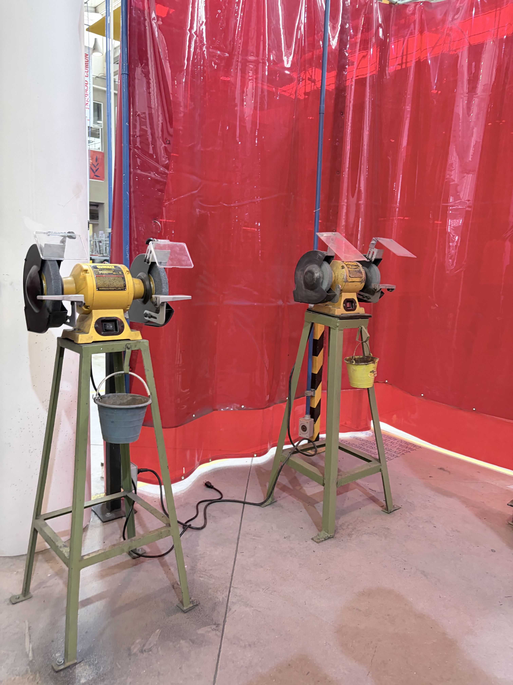
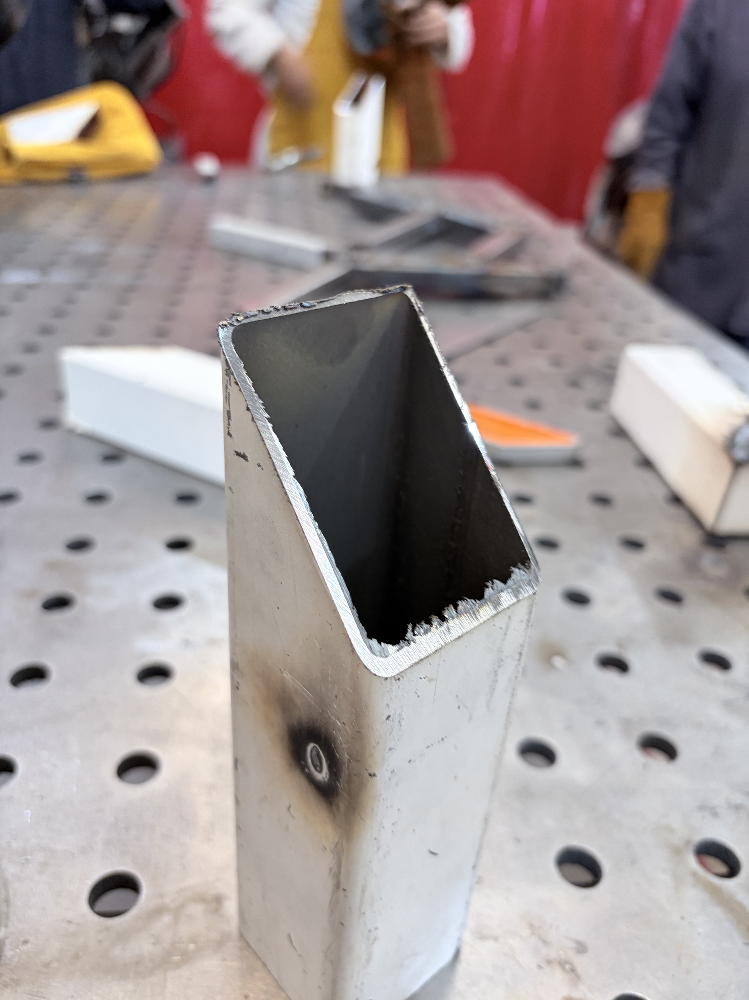

Soldadura, Corte y Pulido
Realizamos un recorrido por la Explanada para aprender el uso correcto de equipos de soldadura por arco, cortaadoras y esmeriles de banco, priorizando en todo momento la seguridad y las buenas prácticas de taller
1. Equipo de Protección y Protocolos
Antes de operar cualquier maquinaria o iniciar procesos térmicos, es obligatorio cumplir con el equipo de seguridad correspondiente según el tipo de área:
- Protección general: Botas de seguridad con casquillo, bata o overol de trabajo, se puede complementar opcionalmente con un peto de cuero/carnaza para mayor protección
- Gafas de seguridad: Obligatorias en todo momento en el taller para proteger los ojos contra chispas, virutas y salpicaduras metálicas
- Guantes de carnaza y careta fotosensible: Indispensables para la soldadura. La careta se oscurece automáticamente al detectar la luz del arco eléctrico para proteger la vista contra la radiación UV e infrarroja


2. Soldadura por Arco Eléctrico
Utilizamos una soldadora industrial marca Miller para el proceso de soldadura por arco con electrodo revestido

Configuración y Técnica de Soldadura:
- Conexión y ajuste: Se enciende el equipo y se ajusta la corriente en Amperios según el grosor del material
- Ejecución:
- Se mantiene el brazo en una posición estable (aprox. 90° respecto a la junta)
- El electrodo debe mantenerse muy cerca del metal sin tocarlo fijamente ni alejarlo demasiado, avanzando a una velocidad constante
- Nota de técnica: Avanzar muy rápido o mantener el electrodo muy alejado quema el material; ir muy lento acumula exceso de calor (igual lo quema)


3. Corte de Metal
Para el cortado de barras metálicas utilizamos la tronzadora de disco abrasivo, la cual permite realizar cortes rectos a 90° y hay otra que hace cortes a 45°


Criterios Operativos y Seguridad:
- Seguridad: No requiere careta de soldar ni guantes, pero las gafas de seguridad son estrictamente obligatorias
- Operación: Se presionan los botones de seguridad del mango y se baja el disco con una presión constante
- Riesgos: Bajar demasiado rápido puede afilar o romper el disco; dejarlo fijo en un solo punto sobrecalienta el metal y desgasta el disco en vano
- Finalización del corte: Hay que bajar el disco hasta sentir que ha atravesado por completo el material antes de retornar el brazo a su posición inicial
- Orientación del material: Para optimizar la geometría circular del disco, las piezas rectangulares o perfiles se deben colocar sobre su sección más angosta, garantizando que el disco alcance la profundidad total del corte
4. Limpieza y Desbaste con Esmeril de Banco
Una vez cortadas las piezas, se pasa al esmeril de banco (piedra de esmerilar) para el acabado final
- Objetivo: Retirar rebabas, limar bordes filosos y dejar las superficies limpias antes de soldar
- Seguridad: Se opera únicamente con gafas de seguridad
- Técnica: Se acerca la pieza firmemente contra la piedra en rotación de manera uniforme hasta obtener un acabado liso y seguro para el ensamble

